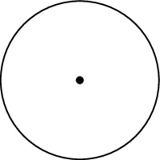
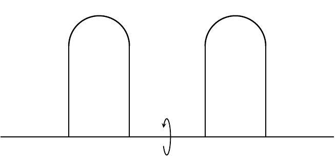

Overview of My Research
My current research largely focuses on Ricci flow, ∂t g(t) = -2Ric(g(t)), and mean curvature flow, ∂t F(t) = -H(t). These are both geometric heat flows and were originally introduced to uniformize manifolds and then classify them using a surgery procedure. Due to the non-linear nature of the equations, one expects to encounter finite time singularities. That is, when the curvature tensor becomes unbounded in some region as t → T. This is a common sort of behavior in non-linear PDEs and some standard problems are to understand the singularity formation by taking “blow-up limits” (zooming in on the singular region) and then classify the possible limits, as well as figuring out how to continue the flow past the singular time.
Gaussian Bounds of Heat Kernels for Evolving Manifolds

If a singularity forms at a “Type I rate”, then it has been shown that blow-ups in this case yield non-flat gradient shrinking Ricci solitons (manifolds which shrink monotonically under Ricci flow). The proofs of these results vitally depend on good control of the exponential weight in Perelman's W-entropy, a monotone quantity which is constant on gradient shrinkers. Since this exponential weight satisfies an adjoint heat equation, control of it comes in the form of “Gaussian bounds” for the heat kernel. Such bounds have been derived under a variety of conditions, using different methods in each case. In a paper with Reto Buzano, I tried to find a more unified approach to proving such Gaussian bounds, which resulted in estimates depending on the evolution of the distance function under Ricci flow, rather than directly on the curvature of the evolving manifold. I also showed these results hold for manifolds evolving under a wider class of flows, ∂t g(t) = -2Sc(g(t)), provided the symmetric 2-tensor Sc satisfies an inequality involving an adjoint heat equation, Bianchi type identity, and comparison to the Ricci tensor.
Bubble Tree Convergence of Shrinking Ricci Solitons

Currently, a full classification of shrinking solitons is unknown. In low dimensions (n=2,3) we know that they are either (quotients of) spheres or cylinders, or Euclidean space. More recently, smooth 4-dimensional Kähler shrinkers have been classified. However, recent compactness theorems indicate blow-ups in dimensions n ≥ 4 can yield shrinkers that are singular themselves which poses another issue to classification. In a paper with Reto Buzano, I investigated this singularity formation, provided the singular set consists of isolated cone points. This involved applying bubble tree analysis to the space of shrinkers with locally bounded energy by performing successive blow-ups around each singular point. This allowed for the proof of an energy identity which, through the Chern-Gauss-Bonnet theorem, shows that any topology lost due to the singularity formation can be recovered by blowing up around the singular points. The bubble tree analysis also yields a local diffeomorphism finiteness theorem, which acts as a qualitative classification theorem. I have also studied how the formation of orbifold points influences the spectrum of the operator associated to the stability of Ricci shrinkers, in particular that it is lower and upper semi-continuous in an appropriate sense. The techniques used to prove this also led (under a technical condition) to showing an asymptotically conical shrinker is unstable if its asymptotic cone is unstable and an inequality quantifying this.
Dynamical Stability of Manifolds Under Ricci Flow

A different way to view Ricci flow is a dynamical system acting on the space of Riemannian metrics. This then leads to the question of dynamical stability: do perturbations of a fixed point flow back to a fixed point? For Ricci flow, the fixed points (modulo scaling and diffeomorphisms) are Ricci solitons, which can be viewed as generalizations of Einstein manifolds. This is well understood in the compact case, in large part due to the existence of a good variational theory for the so called shrinker/expander entropies and the λ-functional. This then leads to Łojasiewicz-Simon inequalities, which are powerful tools in proving dynamical stability. This is much harder in the non-compact case due to a lack of well-defined and finite functionals. However, some modifications have been shown to be reasonably well-behaved for certain Ricci-flat ALE manifolds and asymptotically hyperbolic manifolds. In the latter setting, Klaus Kröncke and I have proved, via a Łojasiewicz-Simon inequality, dynamical stability of Poincaré-Einstien manifolds (asymptotically hyperbolic Einstein manifolds). This is determined by whether or not the original metric is a local maximum of the entropy. This hinged on proving good Fredholm properties of the stability operator in this setting, which could potentially break down if the manifold in non-compact. Klaus and I also proved stability is equivalent to local positive mass and volume comparison properites.
New Ancient Solutions to Mean Curvature Flow by Stacking Pancakes

One of the most reliable ways to construct a new ancient solution (in this case for mean curvature flow) is to consider various transformations of a pre-existing one. For instance, we can start with the grim reaper, which is a self-translating solution to MCF defined as the set of points {(x,-ln(cos(x))) : |x| < π⁄2}. One way to easily generate more solutions is to consider the product of the grim reaper curve with a Euclidean factor. These are known as grim hyperplanes. A more sophisticated method is to take two copies of the grim reaper curve with opposite pointing velocity vectors and glue them together. This new ancient solution (called the Angenent oval) is closed, convex, and lies in a slab of width π. Moreover, some of its asymptotic behavior is inherited from the grim reaper by virtue of the construction. For instance, looking around a point at either tip will yield a grim reaper curve and, as t → -∞, it will sweep out the slab. On the other hand, as t → 0 the Angenent oval will flow to a round point. More recently, Bourni–Langford–Tinaglia have constructed ancient solutions colloquially called “pancakes” by evolving rotated time slices of the Angenent oval by MCF. In addition to inheriting asymptotic behavior from the Angenent oval, this pancake solution is collapsed, so it falls outside of the class of ancient solutions usually considered during singularity analysis. Using these pancake solutions, another way one might try to construct new ancient solutions is by a stacking procedure. That is, taking parallel copies of a pre-existing solution and joining them together using catenoidal necks. Together, Mat Langford, Alexander Mramor, and I were able to stack 2 copies of the pancake solutions to construct a closed, embedded, non-convex ancient solution which lies in a slab. We imposed rotational symmetry on our solutions, since this helped reduce the analysis to studying a forced version of curve shortening flow and made designing the initial data much easier. We also had to impose reflection symmetry on our solution. It remains to rigorously study the asymptotic behavior of our solutions as singularities form and as t → -∞. Additionally, it would be interesting to see if one can construct stacks with a larger number of pancakes and/or with less (or no) symmetry.